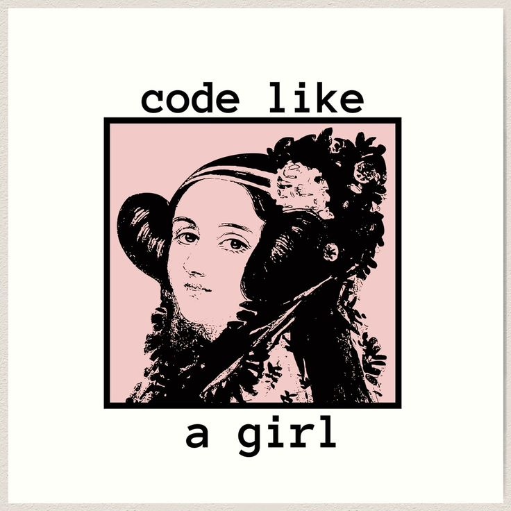

Hey there! My name is Kristen Perot and I am a computer science student from Atlanta, Georgia! I'm really passionate the intersection of helping people and technology, so that's what I hope to pursue out of college. In my free time, I love to read, play video games, and spend time with my friends and family. I also enjoy hiking and exploring new places. I'm always looking for new adventures and experiences!
Some facts about me are that my favorite colors are pink and green, I'm a cat mom of two, I sing in a choir, and I love all things flowers!

My first coding exposure began in elementary school. Early on I fell in love with "An Hour of Code" from Code.org, and I kept with it through middle school.
In middle school, I participated in afterschool groups taught by older girls and competed in local competitions. Because of these educational opportunities, I decided that this is what I truly wanted to do.
While in high school, I took AP Computer Science Classes and participated in summer immersions through Kode With Klossy and Girls Who Code. These experiences shape who I am today and remind me of how important it is to advocate for women and girls in tech!
Now, I am a sophomore at Georgia State University, and I take pride in being able to share my knowledge with others and learn more about the field I love.